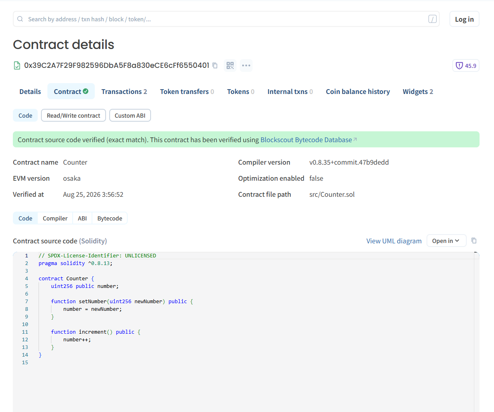
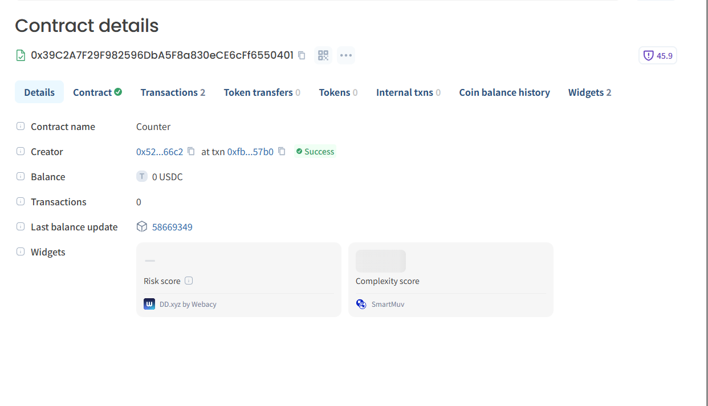

시작 전 준비
먼저 실행 환경을 확인하세요
이 가이드는 터미널 명령어를 사용합니다. macOS와 Linux는 바로 시작할 수 있고 Windows 사용자는 WSL 환경을 권장합니다.
macOS · Linux · Windows WSL
Foundry 설치 파일 다운로드
VS Code 등 원하는 편집기
PowerShell이 아니라 WSL 터미널에서 아래 명령어를 실행하세요. WSL 설치 후 Ubuntu를 열면 됩니다.
STEP 1
Foundry 설치하고 프로젝트 만들기
Foundry는 Solidity 컨트랙트를 개발·테스트·배포할 수 있는 도구 모음입니다.
curl -L https://foundry.paradigm.xyz | bash터미널을 새로 열거나 설치 화면의 source 명령을 실행한 뒤 도구를 설치합니다.
foundryup기본 Counter 예제가 포함된 프로젝트를 생성합니다.
forge init hello-arc && cd hello-arcSTEP 2
Arc 테스트넷 RPC 연결하기
프로젝트 최상위 폴더에 .env 파일을 만들고 RPC 주소를 저장합니다.
ARC_TESTNET_RPC_URL="https://rpc.testnet.arc.io"
source .env.env에는 이후 개인키가 들어갑니다. GitHub 등 공개 저장소에 절대 올리지 마세요.
STEP 3
배포 전에 로컬 테스트하기
기본 테스트를 실행해 Counter 컨트랙트가 정상적으로 컴파일되고 작동하는지 확인합니다.
forge testSTEP 4
지갑을 만들고 테스트넷에 배포하기
학습용 새 지갑을 만듭니다. 출력되는 개인키는 누구에게도 공유하면 안 됩니다.
cast wallet new.env에 개인키를 넣고 다시 불러옵니다.
PRIVATE_KEY="0x..."
source .envCircle Faucet에서 Arc Testnet을 선택하고 지갑 주소를 입력해 테스트넷 USDC를 받으세요.
아래 명령으로 Counter 컨트랙트를 배포합니다.
forge create src/Counter.sol:Counter \
--rpc-url $ARC_TESTNET_RPC_URL \
--private-key $PRIVATE_KEY \
--broadcast출력의 Deployed to 주소를 저장합니다.
COUNTER_ADDRESS="0x..."
source .envExplorer에 소스 코드 검증하기
forge verify-contract $COUNTER_ADDRESS src/Counter.sol:Counter \
--chain-id 5042002 \
--verifier blockscout \
--verifier-url https://testnet.arcscan.app/api/STEP 5
배포한 Counter 실행하기
먼저 현재 숫자를 읽습니다. 새 Counter 값은 0입니다.
cast call $COUNTER_ADDRESS "number()(uint256)" \
--rpc-url $ARC_TESTNET_RPC_URL온체인 트랜잭션을 보내 숫자를 1 증가시킵니다.
cast send $COUNTER_ADDRESS "increment()" \
--rpc-url $ARC_TESTNET_RPC_URL \
--private-key $PRIVATE_KEYTESTED ON ARC
직접 배포하고 온체인에서 검증했습니다
이 가이드는 공식 문서의 단순 번역본이 아닙니다. 2026년 8월 25일 Foundry를 사용해 Counter 컨트랙트를 Arc Testnet에 직접 배포하고, 소스 코드 검증과 increment() 실행까지 완료했습니다.
0x39C2A7F29F982596DbA5F8a830eCE6cFf6550401Arcscan에서 확인 ↗0xfb46094eb099fb9bd80ede7e15dd2d714d1ce30498f578655aeed603f0db57b0트랜잭션 확인 ↗

문제 해결
막혔을 때 확인할 항목
foundryup: command not found
터미널을 완전히 닫았다가 다시 열거나 설치 완료 화면의 source 명령을 실행하세요.
배포 중 잔액 부족 오류가 나요
Circle Faucet에서 Arc Testnet을 선택하고 테스트넷 USDC를 받았는지 확인하세요.
환경변수가 비어 있다고 나와요
현재 폴더에 .env가 있는지 확인하고 source .env를 다시 실행하세요.